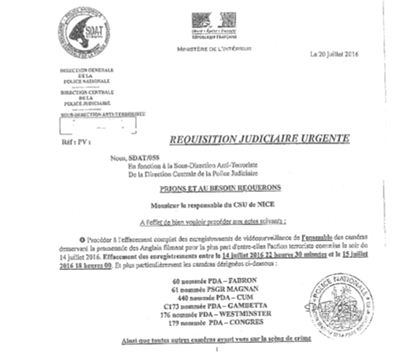
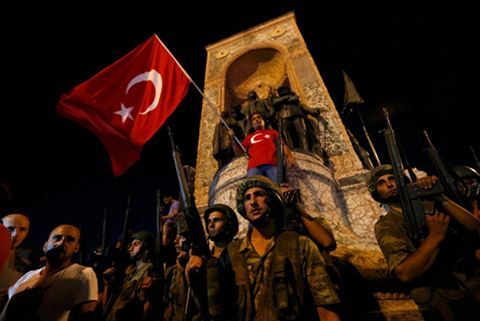
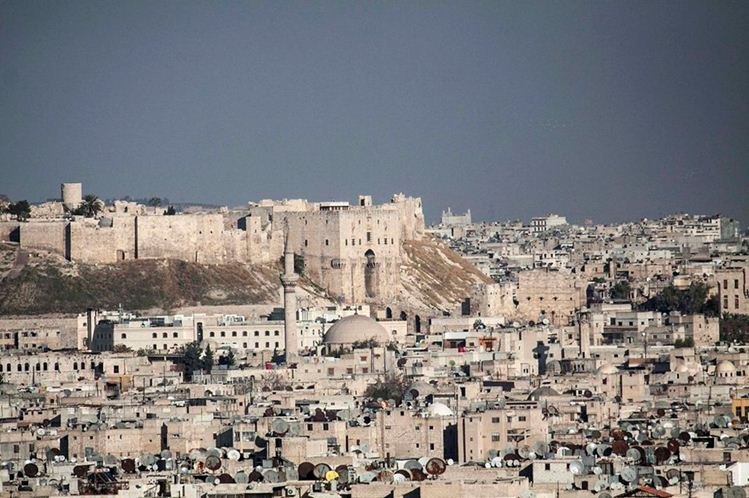
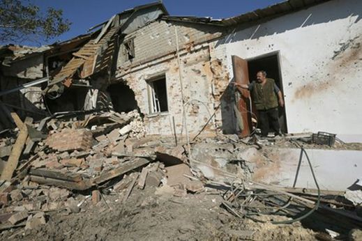

Pour déminer tout de suite le terrain et éviter les accusations de complotisme destinées à ruiner toute discussion sérieuse, je confesserais en préambule que je ne suis pas complotiste, puisque la doxa dit que ce n’est pas bien. Mais je me sens assez volontiers « concertiste » car dans la mesure où le(s) complot(s) n’existe(nt) pas mais qu’il est en même temps difficile pour un observateur assidu de ne pas voir un certain nombre de convergences ou de faits signifiants, j’en déduis tout naturellement que ces actions découlent d’une concertation entre différentes factions, cénacles, ONG, cercles de réflexion, fondations, agences de renseignements et autres. J’ajouterais, et cela me paraît particulièrement vrai ces derniers temps, que ces différentes organisations peuvent parfaitement entrer en concurrence les unes avec les autres, pour des raisons d’agenda ou de divergences sur la stratégie.
Donc haro sur les complotistes et vive les concertistes !
Cela étant posé, je voudrais mettre sur la table un certain nombre de faits qui méritent à tout le moins réflexion.
Quelques mots sur les attentats :
Tout observateur attentif aura remarqué qu’aucun des auteurs d’attentats ne survit à ces actes et qu’après avoir revendiqué son allégeance à l’Islam radical et si possible oublié sa carte d’identité dans le véhicule ayant servi à la commission de son forfait – pour bien prouver au bon peuple qu’il ne s’agit pas de terrorisme patagon ou inuit -, le terroriste passe de vie à trépas avec une bonne volonté qu’il convient de mettre à son actif.
Sur le nombre de participants aussi, il y a souvent divergence d’appréciation, un peu comme pour les manifs (1 terroriste selon la police, 2 ou plus selon les témoins). Ainsi pour l’attentat de Nice, personne n’a répondu à ce jour à la question de savoir qui est l’homme que la police tabasse puis embarque sans ménagement juste à côté du camion à l’issue du terrible carnage1.
Il y a parfois des témoins bizarres, ainsi celui qui filme l’attentat à Nice et qui se retrouve 8 jours plus tard à Munich pour filmer le massacre commis par un germano-iranien dans un restaurant Mac Donald. Il y en a qui ont le génie pour faire des circuits touristiques d’enfer pendant leurs vacances d’été2.
Ce que j’observe, c’est que juste après cet attentat, le Ministre de l’intérieur allemand estime nécessaire « d’évaluer les règles qui régissent le contrôle des armes en Allemagne » et que la France prolonge l’état d’urgence de 6 mois. Autrement dit, mais il ne s’agit absolument pas d’un complot cela va de soi, tout se passe en Europe comme aux Etats-Unis où après les attentats du 11 septembre a été mis en place le Patriot Act qui a fait basculer définitivement les USA hors de l’état de droit.
Il y a encore beaucoup d’autres questions sans réponse sur ces attentats : inaction de forces de sécurité (militaires) présentes sur les lieux3 ou interdites d’action (GIGN)4 durant le massacre du Bataclan, levée des barrages de la police nationale sur la Promenade des Anglais quelques heures avant l’arrivée du camion, demande hallucinante du ministère de l’intérieur de détruire les images de l’attentat, mais puisque nous refusons radicalement de nourrir le complotisme, nous nous arrêterons là5.
Sur le Brexit :
Bien évidemment c’est une nouvelle de première importance puisque c’est la première fois depuis la création de cette structure mondialiste qu’un membre de l’UE, et pas le moindre, quitte le navire. Au vu des réactions de l’oligarchie européenne, toutes tendances confondues, on peut légitimement supputer que ce n’était pas le résultat qu’ils attendaient. Sans préjuger encore des modalités de départ de la Grande-Bretagne des institutions européennes ni des délais dans lesquels cela va se réaliser ou non, je vous invite à regarder avec moi quelques faits troublants ou intéressants qui se sont déroulés, en amont et en aval, à l’occasion de ce référendum. Nous n’aborderons pas bien évidemment l’assassinat de la députée britannique Jo Cox une semaine avant la consultation pour ne pas donner prise à des accusations idiotes de complotisme anti-brexit.
L’ancien ministre du Trésor britannique Danny Alexander a été coopté en janvier 2016 comme vice-président au sein de la Banque Asiatique d’Investissement pour les Infrastructures, structure destinée à concurrencer la Banque Mondiale et le FMI et réunissant à ce jour une soixantaine de pays membres, dont la France, qui avec une participation supérieure à celle de la Grande-Bretagne, n’a pas réussi à placer une seule personnalité dans l’équipe dirigeante.
Les Etats-Unis ne sont pas membres de cette institution bancaire internationale.
Sur le référendum lui-même : une grande partie de la presse populaire anglaise a pris fait et cause pour le Brexit et notamment The Sun, journal le plus lu du Royaume-Uni et appartenant au magnat australo-américain Rupert Murdoch. Mais pour être honnête, il faut reconnaitre que The Times appartenant au même personnage, s’est prononcé lui pour le maintien dans l’UE. Qu’en déduire au-delà de la meilleure santé de la presse d’outre-Manche en regard de sa voisine française ? Tirage du Sun, près de 3 millions, tirage du Times moins de 400.000.
Sachant que l’enjeu de ce référendum était de se disputer les classes paupérisées de Grande-Bretagne pour les faire voter par la peur dans le camp du remain ou leur faire accepter le saut dans l’inconnu avec le camp du Brexit, on peut dire que le milliardaire eurosceptique et proche des néoconservateurs Murdoch a joué la carte du leave, car les dockers de Liverpool ou les chômeurs de Manchester sont plutôt accros aux pin-up de la presse populaire qu’aux éditoriaux compassés du journal préféré de la gentry.
M. Nigel Farage, patron de l’UKIP et véritable vainqueur du Brexit, annonce quelques jours après sa victoire historique qu’il se retire de la direction de son parti. Comme si « on » lui avait fait « amicalement » comprendre que ce n’était pas à lui de tirer profit de ce vote. Idem pour l’autre poids lourd du camp du leave, l’ancien maire de Londres Boris Johnson qui annonce, contre toute attente, qu’il ne briguera pas le poste de Premier ministre.
On nous avait annoncé l’apocalypse financière en cas de sortie de l’Angleterre de l’UE. Si les bourses mondiales, et notamment celle de Londres, ont bien connu une chute spectaculaire dans les heures qui ont suivi le référendum, le moins que l’on puisse dire et qu’elles se sont bien redressées depuis.
Début juillet 2016, le ministre britannique des finances George Osborne, a rencontré à Londres les dirigeants des grandes banques d’investissement internationales6, à savoir Goldman Sachs, Bank of America Merril Lynch, Morgan Stanley, JP Morgan et Citi. Dans un communiqué commun, cette joyeuse équipe – qui ne complote pas sinon ça se saurait mais qui, à l’occasion, peut se concerter - a annoncé vouloir maintenir la place de Londres dans le concert financier en mettant en avant ses atouts en tant que centre névralgique pour les échanges internationaux avec le renminbi et avec la finance islamique.
Que déduire de ces quelques informations glanées au sujet de ce référendum ? Une simple hypothèse, bien évidemment non complotiste, selon laquelle une partie de la City, probablement minoritaire en nombre mais pas en parts de marché, a décidé de jouer la carte chinoise avec sa future monnaie internationale et d’abandonner la carte américaine devenue incontrôlable entre ses dissensions internes et le probable effondrement imminent du dollar. Si cette information devait être confirmée, ce serait une sacrée révolution et le Kremlin aura intérêt à être particulièrement attentif au développement de l’OSC (Organisation de Coopération de Shanghai) et de la politique des BRICS, dont entre parenthèses, le B du Brésil est virtuellement tombé depuis la destitution de Dilma Rousseff.
Sur le coup d’état en Turquie :
Je n’ai jamais eu de grande sympathie pour M. Ergogan, eu égard à ses accointances avec les Frères musulmans, création anglo-saxonne s’il en est7, et surtout en regard de son rôle particulièrement abject dans la guerre que l’occident mène contre la Syrie depuis 2011 avec l’appui direct des monarchies du Golfe et, plus discret mais manifeste quand même, de l’état d’Israël8.
Cela étant dit, en politique on ne s’occupe guère des affects, et force est de reconnaître que ce putsch, car c’en était bien un, est en train de provoquer un séisme géopolitique d’une ampleur que nous n’avons pas fini d’apprécier.
Il semble à peu près acquis que ce coup d’état a été fomenté depuis l’étranger et que les Emirats Arabes Unis y ont joué un rôle probable. Il est également probable que les occidentaux ont donné la main et notamment des Américains et en tout cas avec l’appui du camp néocons.
Certaines sources font état d’un soutien direct de la Russie auprès d’Erdogan afin d’éviter la chute du régime. Ce qui est certain c’est que le philosophe russe Alexandre Douguine se trouvait à Ankara lors de ces événements9 et qu’il a rencontré, entre autres, le maire d’Ankara qui est en même temps le meilleur ami d’Erdogan. Il est peu probable, même dans une version complotiste, qu’ils aient parlé de la garde des lieux saints à Jérusalem ou de la reprise de la production de raisin à Smyrne. Mais l’intérêt du philosophe pour le pantouranisme10 a peut-être joué pour la mission qu’il a remplie.
Ces mêmes sources font état également de l’action décisive que les Russes auraient entreprise pour protéger le vol de l’avion présidentiel turc durant les événements, de même qu’ils auraient menacé les avions de chasse des putschistes –partis de la base d’Incirlik où sont stockées des bombes nucléaires américaines - à partir de leurs installations militaires anti-aériennes situées en Syrie. Certains sont très au fait de l’efficacité redoutable des missiles S-400.
Et question subsidiaire, l’aviation des putchistes pouvait-elle encore utiliser ses systèmes de radars embarqués ou ceux-ci étaient-ils rendus inopérants par le système de brouillage que les Russes semblent parfaitement maîtriser ? Voir pour cela les mésaventures à répétition de l’USS Donald Cook ici en 201411 et là en 201612.
Le général Joseph Dunford – Chef d’état-majorSelon certaines sources du Pentagone - non identifiées hélas et donc pouvant nourrir les craintes de complotisme - le chef d’état-major américain, le général Joseph Dunford aurait affirmé le 31 juillet dernier à ses interlocuteurs lors de son déplacement en Turquie que le coup d’état aurait été réalisé avec l’aide de la CIA sous le couvert de la fondation Jamestown13.
Bien évidemment, ces informations sont à prendre avec des pincettes, mais si on en croit toujours cette même source, le général Dunford aurait informé ses homologues turcs que le Pentagone était en liaison étroite avec Moscou pour éviter l’embrasement nucléaire général et qu’il en avait donné une preuve en livrant aux Russes un de leurs avions espion dernier cri en guise de sa bonne foi.
Cette histoire, totalement abracadabrantesque a pourtant été confirmée, de manière lapidaire, sur le site Russia Today14 qui confirme qu’un avion espion US, probablement en provenance d’une des cinq bases aériennes américaines situées au Japon, s’est bien posé en urgence le 27 juillet dernier sur l’aéroport de Khabarovsk suite à un incident technique avec le train d’atterrissage. Alors ? Complot ? Pas complot ? Complot dans le complot ? Je vous laisse juge. L’important c’est de refuser tout amalgame et surtout de ne pas sombrer dans le complotisme.
Quoi qu’il en soit, ce qui est certain, et sauf hypothèse d’un nouveau putsch réussi contre Erdogan dans un futur proche, c’est que l’on peut conjecturer sans grand risque de se tromper que l’atout géostratégique essentiel aux confins de l’Europe et de l’orient que l’OTAN détenait avec la Turquie va lui échapper inéluctablement au profit de l’Organisation du Traité de Shanghai. Si le but du coup d’état était de faire rentrer la Turquie dans le rang et de l’empêcher de se rapprocher de Moscou, le moins que l’on puisse dire est que les auteurs ont raté superbement leur coup. Voilà un bel exemple d’hétérotélie15 à méditer dans les écoles du renseignement.
Mais l’intérêt premier à mes yeux que révèle cette affaire est de mettre en évidence ce qu’il semble de plus en plus difficile à dissimuler, à savoir que des factions profondément antagonistes se livrent une lutte à mort dans l’establishment américain. On en avait eu des prémisses ces derniers mois en Syrie quand divers groupes de rebelles « modérés » s’affrontaient entre eux alors qu’ils étaient soutenus respectivement par le Pentagone et par la CIA.
On peut également supputer que la percée de Trump est une illustration de ces affrontements entre l’état profond et une réaction anti-oligarchique dans le Nouveau Monde. Si seulement cela pouvait être vrai…
Sur la bataille d’Alep :
L’enjeu de cette bataille est capital, car le vainqueur sera celui qui l’emportera définitivement. Ou l’armée arabe syrienne avec ses alliés russes, iraniens et libanais, verrouille définitivement les factions djihadistes dans la partie orientale de la ville et leur résistance ne devrait pas dépasser quelques semaines ou quelques petits mois au plus, ou les terroristes brisent le siège et la guerre infernale se poursuivra encore de longues années avec le risque non négligeable d’une partition du pays selon le plan B concocté par les néocons à défaut du renversement de Bachar El Assad.
Ce que l’on peut observer c’est que la diplomatie américaine poursuit son soutien indéfectible à ce qu’elle appelle les « rebelles modérés », qu’elle tente de les protéger contre les frappes russes et qu’elle fait tout ce qui est en son pouvoir pour empêcher une solution politique dans le cadre des accords de Genève. On peut donc légitimement en conclure que, complot ou pas complot, l’administration Obama, volens, nolens, poursuit sa stratégie de chaos initiée avec le renversement de Kadhafi et les printemps arabes dans le but de remodeler le proche et le moyen orient.
Mais bon, on sait que lorsqu’un gros bateau veut s’arrêter, il doit s’y prendre longtemps en avance avant d’y parvenir. Un peu comme pour la Turquie d’Erdogan qui semble trouver le Président syrien fréquentable depuis que les Russes lui ont sauvé sa tête lors du putsch du 15 juillet dernier, même si une grande partie des renforts terroristes venus participer à la bataille d’Alep, venait principalement de Turquie. Un pays ne change pas ses habitudes comme ça du jour au lendemain, surtout quand elles durent depuis des années et qu’elles ont probablement généré la mise en place de circuits financiers extrêmement lucratifs, y compris et surtout pour les soutiens actifs de l’AKP. On peut imaginer d’ailleurs, sans grand risque d’erreur, qu’un des points abordés lors de la rencontre Poutine/Erdogan à Saint Petersbourg, a été d’imaginer une solution pour faire sortir d’Alep, et sans trop de casse, les officiers Turcs des forces spéciales qui y sont assiégés avec leurs collègues occidentaux.
Sans penser le moins du monde à un quelconque complot, chacun aura remarqué que l’ensemble de la presse mainstream occidentale, et notamment française, a trompetté sur un air de victoire lorsque les djihadistes d’Alep ont semblé marquer des points le matin du 6 août en bousculant quelque peu les lignes de défense des soldats loyalistes. Après une étude assez exhaustive de la presse non officielle et non occidentale, il semblerait que l’encerclement ne soit pas rompu et surtout que les pertes dans les rangs terroristes soient très élevées au point de les empêcher d’espérer toute opération sérieuse dans l’avenir pour briser la nasse.
Sur le Donbass :
Le 6 août dernier, le président de la république populaire de Lugansk a été victime d’un attentat17 au cours duquel il a été blessé. En occident, seule la presse anglo-saxonne en a fait état. Aucune information dans la presse française. Que cet homme ait été victime d’un complot visant à l’éliminer ne me viendrait pas à l’esprit, mais quand on connait les mesures de sécurité qui existent dans les deux républiques séparatistes du Donbass, entre autres pour éviter les attentats, on se dit que ceux qui ont organisé cette petite sauterie ont dû sacrément se concerter avant de passer à l’action.
Igor Plotnitsky, président de RPL et son véhicule après l’attentat
Les moyens qui ont été mis en œuvre dans cette tentative d’assassinat dépassent largement à mon humble avis, les capacités techniques et budgétaires actuelles de l’état ukrainien et on peut donc en déduire qu’après avoir écarté la piste du complot sans le moindre état d’âme, il y encore des services occidentaux qui poursuivent sans relâche la guerre larvée contre les résistants du Donbass dans le but inavoué d’affaiblir la Russie en créant un foyer de fixation à ses frontières ou de la contraindre à intervenir militairement afin de ruiner sa réputation internationale, déjà largement atteinte par le matraquage systématique des médias occidentaux sur les prétendues turpitudes russes (dopage, droits de l’homme, militarisme, etc.).
Le 3 août dernier, pas moins de 466 violations du cessez-le-feu par les troupes de Kiev ou leurs supplétifs occidentaux ont été constatées sur le front de Donetsk. Principales cibles ? Les infrastructures vitales pour l’économie et les quartiers d’habitation pour terroriser les populations et les contraindre à fuir.
Loin de moi l’idée de voir le moindre complot dans cette guerre à bas bruit qui est menée sur cette terre slave, mais force est de reconnaître que les théories géopolitiques de Halford Mackinder ou de Nicholas Spykman sont suivies à la lettre par ceux qui ont mis Poroshenko et ses amis néo-nazis à la tête de l’état ukrainien.
Sur la réussite d’un complot :
Si les complots n’existent pas en occident, probablement grâce à notre amour profond pour la démocratie et au respect infini des droits de l’homme dont font preuve nos dirigeants, il n’en est bien sûr pas de même dans les pays arriérés à peine sortis de l’obscurantisme tsariste ou de la répression bolchevique.
Il est clair que dans ce pays aux mœurs moyenâgeuses, pour ne pas dire barbares, le complot est présent partout et notamment au sommet de l’état, ce qui est normal, somme toute, quand on a un président issu directement du KGB.
Mais en l’occurrence, le complot qui vient d’être mis à jour le 27 juillet dernier – et qui semble avoir réussi - est particulièrement intéressant car il mettait aux prises les tenants de l’école économique interventionniste avec les partisans de l’école libérale, voire néo-libérale. Vous aurez compris bien évidemment que les complotistes étaient les méchants étatistes et les anti-complotistes les gentils libéraux.
Pour faire court, le club Stolypine - du nom d’un ministre de Nicolas II ayant défendu et appliqué avec succès les théories d’un état interventionniste – était opposé aux libéraux du régime dont la figure de proue était l’ancien ministre des finances Alexeï Koudrine.
Après de nombreuses années passées sans autre orientation idéologique que celle du libre-marché et d’un patriotisme de bon aloi, la Russie de Vladimir Poutine vient d’accomplir un pas décisif dans la définition d’une véritable multipolarité en donnant un contenu idéologique fort dans ce qui constitue la spécificité russe en regard du monde occidental.
En ayant pris fait et cause pour Sergueï Glaziev, l’un de ses proches conseillers et membre éminent du Club Stolypine, contre les libéraux de son gouvernement et la banque centrale russe, Vladimir Poutine vient de trancher le nœud gordien qui emprisonnait la Russie depuis les années Eltsine.
Les conséquences de cet acte politique fort seront probablement observables avant la fin de cette année. Un remaniement à court terme du gouvernement Medvedev est hautement probable de même que la remise en cause du statut d’indépendance de la banque centrale de Russie.
Pour ceux qui ne craindraient pas de verser dans le complotisme slave et qui souhaiteraient néanmoins avoir des informations plus précises sur cette véritable révolution copernicienne que vient d’accomplir la Russie, je vous conseille vivement cet article de William Engdahl paru ici en français18 et là19 en version anglaise originale pour les puristes.
La réussite de ce complot est véritablement époustouflante et représente dans le monde des idées un bouleversement au moins aussi profond que le revirement géopolitique de la Turquie à l’égard de l’occident.
C’est bien simple, un tel succès, ça me donne tout bonnement envie de devenir complotiste moi aussi. Mais, surtout ne faites pas comme moi, sinon, ils vont croire à un complot…
Partager cette page